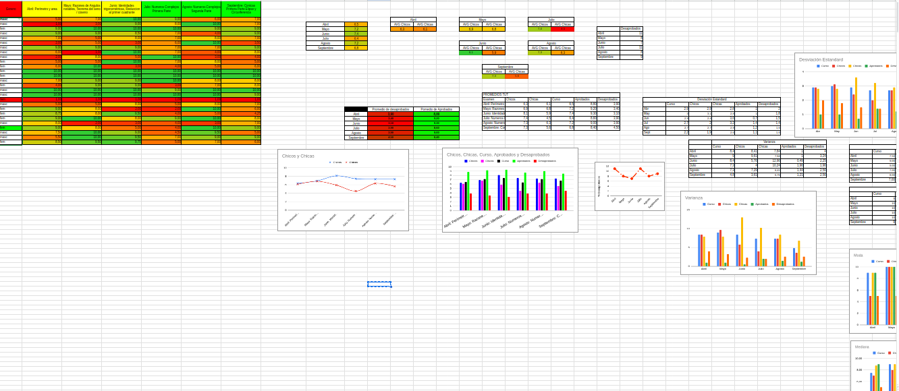
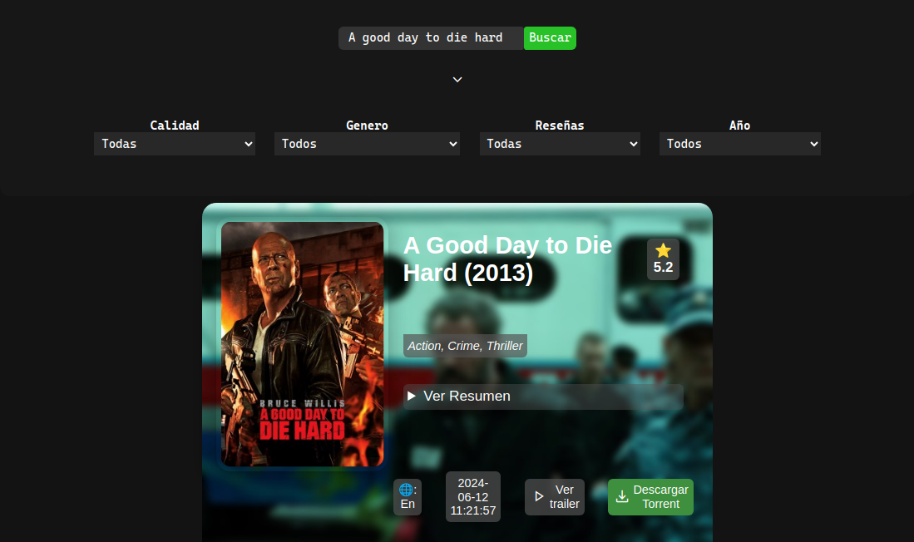
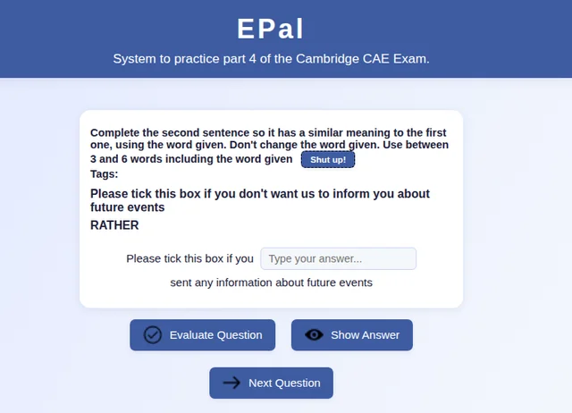
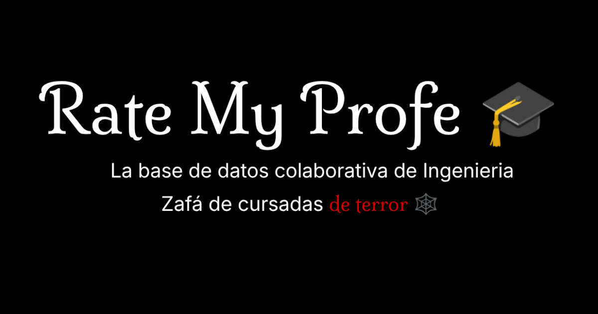
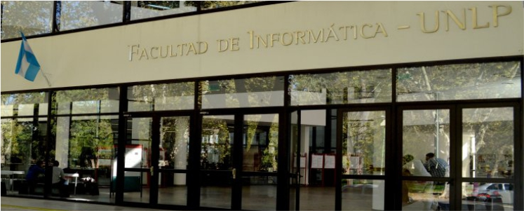

Statistical Analysis of Math Grades - Final Year High School
Google Sheets
Google Suite
Advanced spreadsheet functions
Data collection & Analisis
Developed a statistical analysis project examining math grades of 28 final-year high school students using Acadeu and Google Sheets. Calculated and visualized key metrics, including mean, median, mode, variance, and standard deviation, to assess performance trends. Created comparative charts to analyze averages by gender, performance groups, and exam difficulty, identifying patterns and insights to improve academic evaluation methods. Check out the written report here!

PeliLookup
APIs
HTML & CSS
Less
Javascript
PeliLookup is a web application that utilizes the official YTS API (yts.mx or yts.ag) to search for movies and their downloads. It provides an easy interface to explore the available content. You can try the app at PeliLookup.

EPal
Javascript
Python
HTML & CSS
Json
FastAPI
EPal is a web app for practicing Part 4 of the Cambridge CAE (C1 Advanced) English exam: key word sentence transformations. Shows you a sentence, a key word, and prompts to complete the answer. Instant feedback on your answer. Browse questions by tag, keyword or at random. An API to host the questions is implemented in python with Fast API.
Public Opinion Survey Scraper — UNLP
Python
Python Scraper
Data Analysis
Data Parsing
Python scripts to scrape and analyze public opinion survey data from the SIU Guaraní system of the UNLP Faculty of Engineering. Uses multithreading to collect subject- and teacher-level survey results in parallel, exporting clean CSV files for analysis.
Whemini: Google Geimini Whatsapp Bot
whatsapp-web.js
NodeJS
PM2
Google Gemini API
WhatsApp bot powered by the Google Gemini API. It features per-chat contextual memory, formatting support (Markdown), and management commands. Developed in Node.js using whatsapp-web.js.

Rate My Profe 🎓
Next.js
Vercel
PostgreSQL
Microservices
Rate My Profe allows students of the National University of La Plata (UNLP) to view ratings and comments about professors and leave anonymous reviews, combining historical data from official surveys with new student feedback. The goal is to make the professor selection process more transparent and accessible.

Programacion I
Pascal
Programacion Imperativa
Este repositorio contiene la resolución de todos los ejercicios y trabajos prácticos de la materia Programación 1, utilizando el lenguaje Pascal. Todo el código fue escrito y probado por mí.


Video de TP Final F.A.C.
Arquitectura de computadoras
Ensamblador
Binario
Sistemas de representación
Script del videol de TP de final de Fundamentos de Arquitectura de Computadoras, Ing. en Computacion plan 2024
Programacion II
Pascal
Java
R-info
Concurrencia
POO
Paralelismo
Repositorio de los programas realizados en la materia Programacion II (2). Para la carrera de Ing. en Computacion en la facultad de ingenieria-informatica UNLP. Equipo de trabajo: Facu y Stefano.